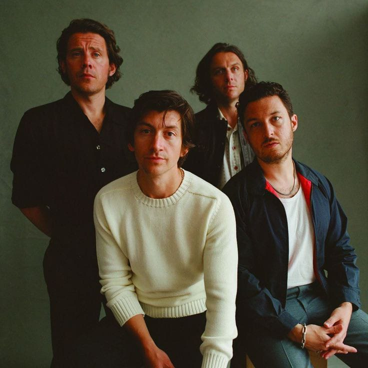
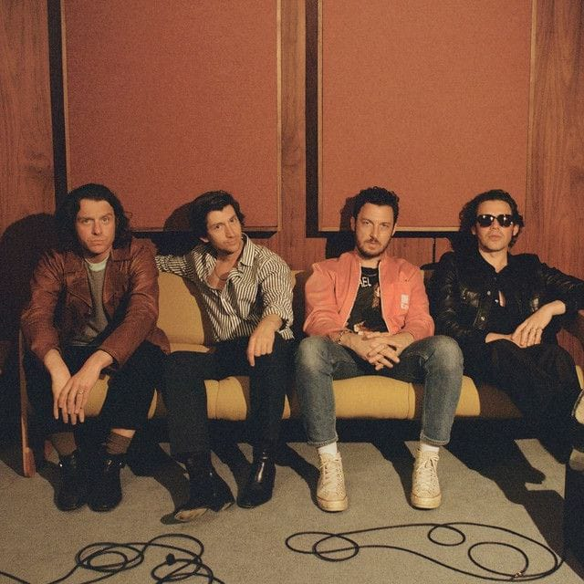
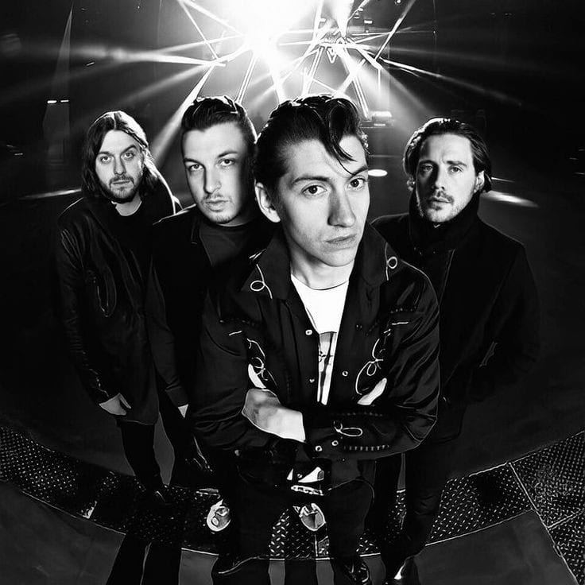

Gallery



Favorite Album (Spotify)
Album terfavorit Arctic Monkeys menurut Spotify adalah [AM]
Detail Awal Karir dan Kesuksesan
Asal dan Sejarah:
Arctic Monkeys dibentuk oleh Alex Turner (vokalis, gitar), Jamie Cook (gitar), Matt Helders (drum, vokal latar), dan Andy Nicholson (bass) di Sheffield, South Yorkshire, Inggris, pada tahun 2002. Mereka pertama kali mendapatkan popularitas melalui internet, khususnya situs Myspace, sebelum akhirnya menandatangani kontrak rekaman dengan Domino Recording Company.Pengaruh Musikal:
Arctic Monkeys dikenal dengan gaya musik rock yang energik, dengan pengaruh dari punk rock, garage rock, dan post-punk revival. Mereka sering menggunakan lirik yang cerdas dan observasional yang mencerminkan kehidupan urban dan pengalaman pribadi.Perjalanan Karir:
Arctic Monkeys merilis album debut mereka, "Whatever People Say I Am, That's What I'm Not," pada tahun 2006, yang langsung sukses besar dan menjadi album debut terlaris di Inggris pada saat itu. Mereka telah merilis beberapa album studio lainnya, termasuk "Favourite Worst Nightmare" (2007), "AM" (2013), dan "Tranquility Base Hotel & Casino" (2018).Penghargaan dan Pengakuan:
Arctic Monkeys telah menerima banyak penghargaan termasuk Brit Awards, Mercury Prize, dan Grammy Awards. Mereka juga sering dinobatkan sebagai salah satu band rock terbaik oleh berbagai publikasi musik dan media.Penggemar dan Dampak:
Arctic Monkeys telah mempengaruhi banyak band dan musisi lainnya dengan gaya musik mereka yang inovatif dan lirik yang cerdas. Mereka dianggap sebagai salah satu band rock paling penting dari generasi mereka dan warisan musik mereka terus dikenang oleh para penggemar dan industri musik secara luas.